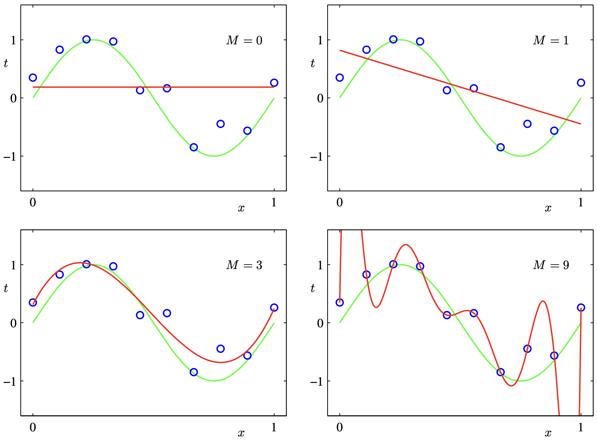
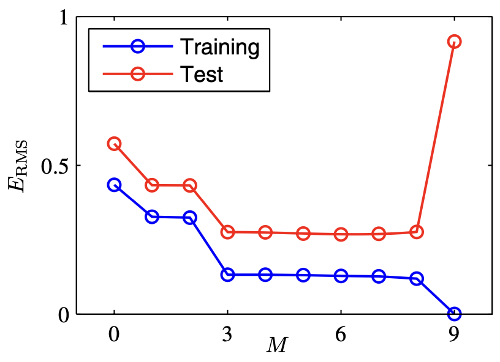

1.1 Example: Polynomial Curve Fitting
Suppose we observe a real-valued target variable \(x\) and we wish to use this observation to predict the value of a real-valued target variable \(t\). We generate synthetic data from the function \(\sin(2 \pi x)\) with random noise included in the target values. In real data sets, the noise may arise from intrinsically stochastic processes such as radioactive decay but more typically is due to there being sources of variability that are themselves unobserved.
Now suppose that we are given a training set comprising \(N\) observations of \(x\), written \(\mathbf{x} \equiv (x_1, \dots, x_N)^\top\), together with corresponding observations of the values of \(t\), denoted \(\mathbf{t} = (t_1, \dots, t_N)\).
Consider a simple approach based on curve fitting. We fit the data using a polynomial function of the form
Functions, such as the polynomial, which are linear in the unknown parameters are called linear models. We minimize the error between the function \(y(x, \mathbf{w})\) and the training data:
Since the \(E(\mathbf{w})\) is a quadratic function of the coefficients \(\mathbf{w}\), we can find the closed form solution of \(\mathbf{w}\) that minimizes \(E(\mathbf{w})\). There remains the problem of choosing the order \(M\) of the polynomial and this is an example of model comparison or model selection. The figure below shows four examples of fitting polynomials with \(M = 0, 1, 3, 9\) to the data set. We notice that \(M=0, 1\) give rather poor fits to the data and consequently rather poor representations of the underlying function \(\sin(2\pi x)\), while \(M=9\) obtain an excellent fit but oscillates wildly. The latter behaviour is known as over-fitting.
{kind=link}
We shall evaluate \(\mathbf{w}^*\) on a test data set from the same underlying distribution. It is sometimes more convenient to use the root-mean-square (RMS) error defined by
Graphs of the training data and test set RMS errors are shown for various values of \(M\) in the figure below.
{kind=link}
One technique that is often used to control the over-fitting phenomenon in such cases is that of regularization, which involves adding a penalty term to the error function in order to discourage the coefficients from reaching large values
Note that the coefficient \(w_0\) is omitted from the regularizer because its inclusion causes the results to depend on the choice of origin for the target variable, or it may be included but with its own regularization coefficient. Techniques such as this are known as shrinkage methods because they reduce the value of the coefficients. The particular case of a quadratic regularizer is called ridge regression and in neural networks, this is known as weight decay.